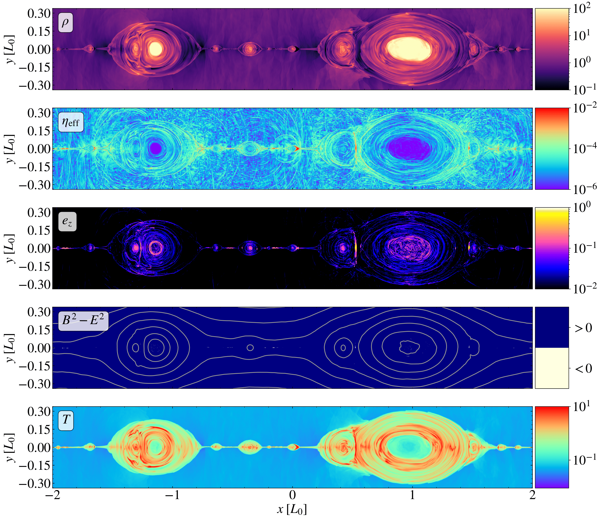
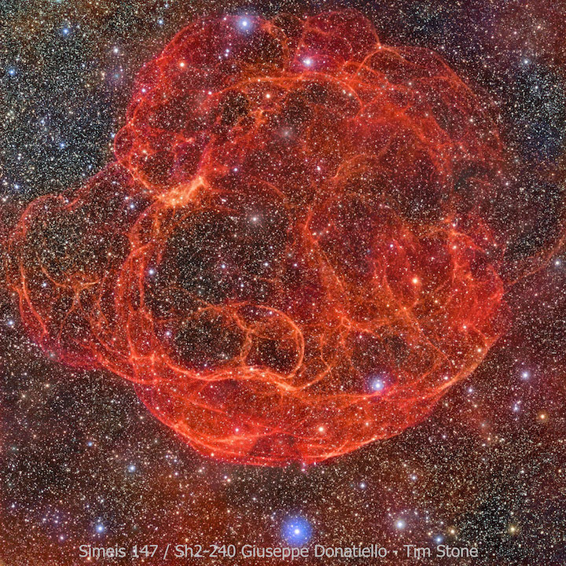

Dissipative General Relativistic
Resistive Magnetohydrodynamics

My current work (no pun intended, but I'll take it anyway)
focuses on the development of general
relativistic resistive magnetohydrodynamics inspired by 14-moment methods.
The "usual" relativistic hydrodynamics equations are defined by
requiring the baryon number density current, \(N,\)
and the fluid energy-momentum density, \(T,\)
be conserved; i.e.,
\( \nabla \, \cdot N = 0 \) and \( \nabla \cdot T = 0 \).
Since \(N\) is a four-vector and \(T\) is a symmetric (2,0) tensor
in four dimensions (and therefore has ten independent components),
these two objects comprise 14 degrees of freedom.
However, the conservation equations are only five in number.
Therefore, this
model leads to nine unconstrained degrees of freedom;
i.e., nine degrees of freedom without corresponding evolution equations.
These nine degrees of freedom correspond to dissipative processes.
One option is to set all of these equal to zero; this leads to a (very
successful) model of equilibrium hydrodynamics.
The 14-moment method provides a means to instead derive evolution
equations for these dissipative degrees of freedom.
One nice way to define \(N\) and \(T\) is as the first and second moments
of a distribution function, \(f\), which itself describes the
number number density of fluid particles in
an eight-dimensional phase space comprised of spacetime points \(x\)
and four-momenta \(p\).
The normalization of \(u\) (i.e., \(u\cdot u=-1\),
with \(u:=\dot{x}\))
and \(p\) (i.e., \(p\cdot p = -m^{2}\),
with \(m\) the mass of a single particle),
lead to the eight-dimensional phase space reducing
to a six-dimensional phase space.
More description to come...
Gorgeous figure showing magnetic reconnection taken from
Bugli et al., arXiv 2410.20924 (2024)
Core-Collapse Supernovae

The stability of stars is due to the inward pull of gravity being
balanced by the outward push from gas pressure and radiation pressure
produced by nuclear fusion, in addition to
pressure support from degenerate electrons in the stellar core.
When the core runs out of material to fuse, this balance is lost
and material accumulates onto the core unimpeded.
Eventually, the core will reach its effective Chandresekhar mass, at which
point the electron degeneracy pressure is insufficient to support the
core, gravity takes over, and the core begins to collapse.
If the star is more massive than about ten Suns, this collapse will
end in a spectacular explosion known as a core-collapse supernova,
the energy output of which is approximately 100 times
that which our Sun will produce in its entire ten million year lifetime!
What's more, all that energy is released in a matter of seconds!!
These explosions distribute many of the heavy elements in our solar
system, including carbon, the element on which life as we know it is
based, and so it behooves us to understand this process well, because
it is to that which we literally owe our entire existence!
Although there are many promising leads, it is not currently known
exactly how this explosion proceeds.
What is known is that the core collapses until the
pressure is so high that the repulsive electrical forces between
the electrons and the nuclei are overcome and the electrons and protons
combine to form neutrons (and neutrinos), thus effectively creating
a single nucleus the size of a city—this is what
will eventually become a neutron star (assuming it doesn't collapse to
a black hole).
This transition produces a shock wave that propagates outward.
It is intuitive that this shock wave simply propagates through
the entire star, blowing the material away with it;
however, as often happens, nature is not so simple.
It was discovered via computer simulations that the shock wave stalls
about 200 km from the center of the star.
The shock is somehow re-energized, and continues on its explosive
path.
One goal of supernova models is to determine this
re-energization mechanism.
For my PhD, I worked under the guidance of Professors
Kelly Holley-Bockelmann at Vanderbilt University, Eirik Endeve
at Oak Ridge National Laboratory, and Anthony Mezzacappa
at the University of Tennessee at Knoxville on the toolkit
for high-order neutrino-radiation
hydrodynamics, thornado,
a computer code that aims to simulate core-collapse supernovae in
three dimensions using Runge–Kutta discontinuous Galerkin methods.
My work focused on developing a module that solves the general
relativistic hydrodynamics equations under the 3+1 decomposition of
spacetime and the conformally-flat condition.
These simulations are computationally very expensive, requiring many
hours on leadership-class supercomputers such as
Summit and
Frontier.
To effectively utilize these resources, our code must be able to
run in parallel with multiple CPU cores, and also on GPUs.
To achieve this, we are coupling
thornado
to AMReX,
a software package designed to allow codes to run in parallel and
use block-structured adaptive mesh refinement,
allowing us to focus the resources on
those parts of the simulation that most need them.
Publications
Dunham et al., ApJ 964:38 (2024)
Pochik et al., ApJS 253:21 (2021)
Pochik et al., ApJS 253:21 (2021)
Dunham et al., J. Phys. Conf. Ser.
1623:012012 (2020)
Endeve et al., J. Phys. Conf. Ser. 1225:012014 (2019)
Strong Gravitational Lensing

One consequence of Einstein's theory of general relativity is
that as light travels through a gravitational field, it is
deflected. This phenomenon is known as gravitational
lensing, because the effects are similar to those of light
traveling through a lens. For these effects to be measurable,
enormous masses are required, e.g., a star, a galaxy, or something
even bigger! One source of measurable gravitational lensing is the
light from entire galaxies being deflected by the mass of a galaxy
cluster, the largest gravitationally-bound objects in the
Universe. In analogy with a physical lens, gravitational lenses
can also have magnification effects, increasing the apparent size
of a galaxy, allowing astronomers to see features that would
otherwise be too small to discern.
A special case of gravitational lensing is so-called strong
lensing, where the light is deflected to such a degree that
multiple light rays leaving the same point, but traveling in
different directions, can all be bent directly toward us, causing
us to see multiple images of the source (like the mouth and sides
of the smiley face in the accompanying picture).
As an undergraduate I did research with Professor Keren Sharon
in strong gravitational lensing, as part of the Sloan Giant Arcs
Survey (SGAS). My work involved modeling these strong lenses
(i.e., clusters of galaxies, two of which make up the eyes of the smiley
face in the picture) to determine their masses based on the color,
shape, and other properties of the multiple images.
See my undergraduate honor's thesis on one particular lens, SDSS
J1438+1454,
here,
or the published journal article that came out of that research here.